THE ROAD AHEADLA RUTA TE ESPERA
The road is more hole than asphalt, and the only way through is fast. Steer around the potholes, grab every coin you can, and save your jump for when you really need it. Every coin you bring home goes into the bank, to buy a tougher or faster car and a trail to show off with.
La ruta tiene más pozo que asfalto, y la única forma de pasar es ir rápido. Esquiva los baches, recoge todas las monedas que puedas y guarda el salto para cuando de verdad lo necesites. Cada moneda que traes a casa va al banco, para comprar un auto más resistente o más rápido y una estela para lucirte.
On the MEGA65 the whole road is in full color, edge to edge, with Sebas's drawings. A full day goes by every two minutes, through five landscapes, with the radio on. How long can you last?
En la MEGA65 la ruta entera va a todo color, de punta a punta, con los dibujos de Sebas. Un día entero pasa cada dos minutos, por cinco paisajes, con la radio prendida. ¿Cuánto vas a aguantar?
ON THE ROADEN LA RUTA
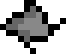
Potholes.Baches. Each one costs your car a bar of strength. The longer you drive, the more there are. Cada uno le cuesta a tu auto una barra de fortaleza. Cuanto más conduces, más hay.-
Coins.Monedas. Your score and your money. They drift slower than the road, so they come to you. Son tu puntaje y tu dinero. Van más despacio que la ruta, así que vienen hacia ti.
-
Cones and obstacles.Conos y obstáculos. Don't run them over: jump them, and they pay for every instant you hang above. Right under your car at the top of the jump: a perfect jump, +10. No los atropelles: sáltalos, y te pagan por cada instante que pasas encima. Justo debajo de tu auto en lo más alto del salto: salto perfecto, +10.
-
Jump tanks.Tanques de salto. One jump each. Up in the air, potholes can't touch you, but you can't steer either. Un salto cada uno. En el aire, los baches no te tocan, pero tampoco puedes girar.
-
Wrenches.Llaves. Give back a bar of strength as soon as you touch one. They keep coming as long as your car is missing some. Te devuelven una barra de fortaleza apenas las tocas. Siguen apareciendo mientras a tu auto le falte alguna.
-
Medals.Medallas. Seven to win, from cone points to surviving a whole hour. One of them is a secret. Siete para ganar, desde los puntos de cono hasta aguantar una hora entera. Una es secreta.
FIVE LANDSCAPESCINCO PAISAJES
The country, the pine woods, the snow, the desert and the city, in no fixed order. Each one lasts a little over half a minute and brings its own obstacle in place of the cone, which pays the same if you jump it. At night everything gets darker, and the streetlights and your headlights come on.
El campo, los pinares, la nieve, el desierto y la ciudad, sin un orden fijo. Cada uno dura poco más de medio minuto y trae su propio obstáculo en lugar del cono, que paga lo mismo si lo saltas. De noche todo se oscurece, y se prenden los faroles y los faros de tu auto.
-
Country: hay bales.Campo: fardos de paja. They roll toward you. Hit one and it flies off, then falls back onto the road further ahead. Ruedan hacia ti. Si chocas uno sale volando, y vuelve a caer en la ruta más adelante.
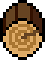
Pine woods: logs.Pinares: troncos. They don't fly: a log bumps your car up and pushes it back. It costs no strength, only ground. No salen volando: un tronco hace saltar tu auto y lo empuja hacia atrás. No cuesta fortaleza, solo terreno.-
Snow: snowmen and snowballs.Nieve: muñecos y bolas de nieve. A snowball rolls and grows as it comes. And the road is icy: your car slides, so steer gently. La bola rueda y crece mientras viene. Y la ruta está helada: tu auto resbala, así que gira con suavidad.
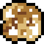
Desert: tumbleweeds.Desierto: plantas rodadoras. They bounce along faster than the road. Hit one and the wind takes it away. Van rebotando, más rápido que la ruta. Si chocas una, se la lleva el viento.
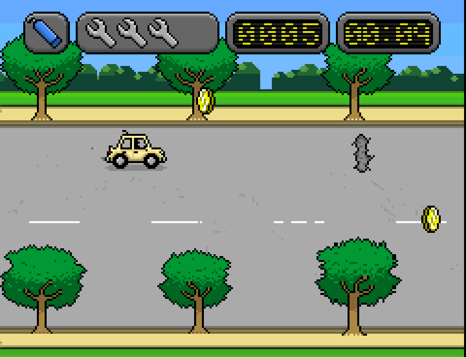
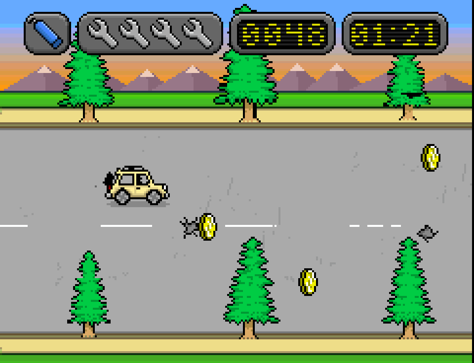
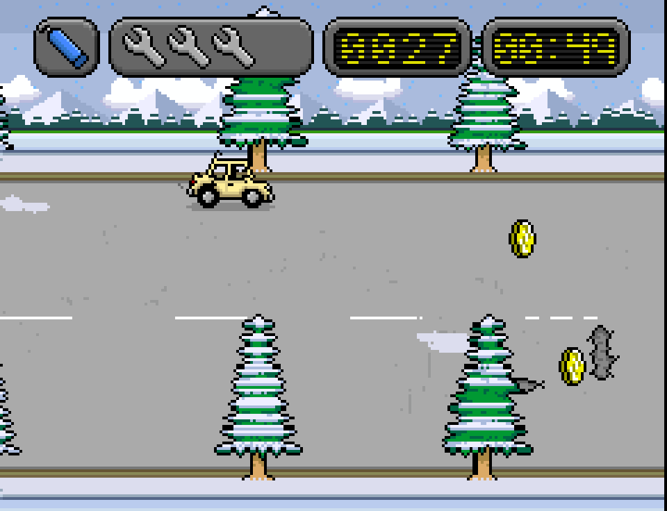
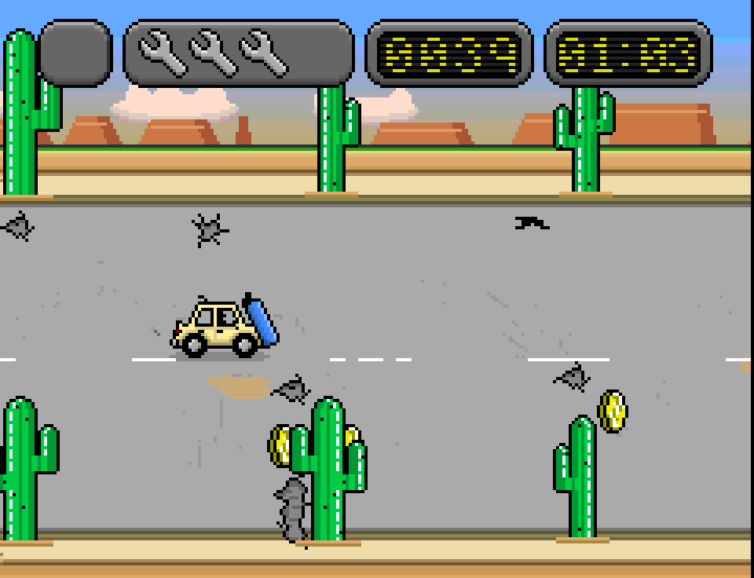
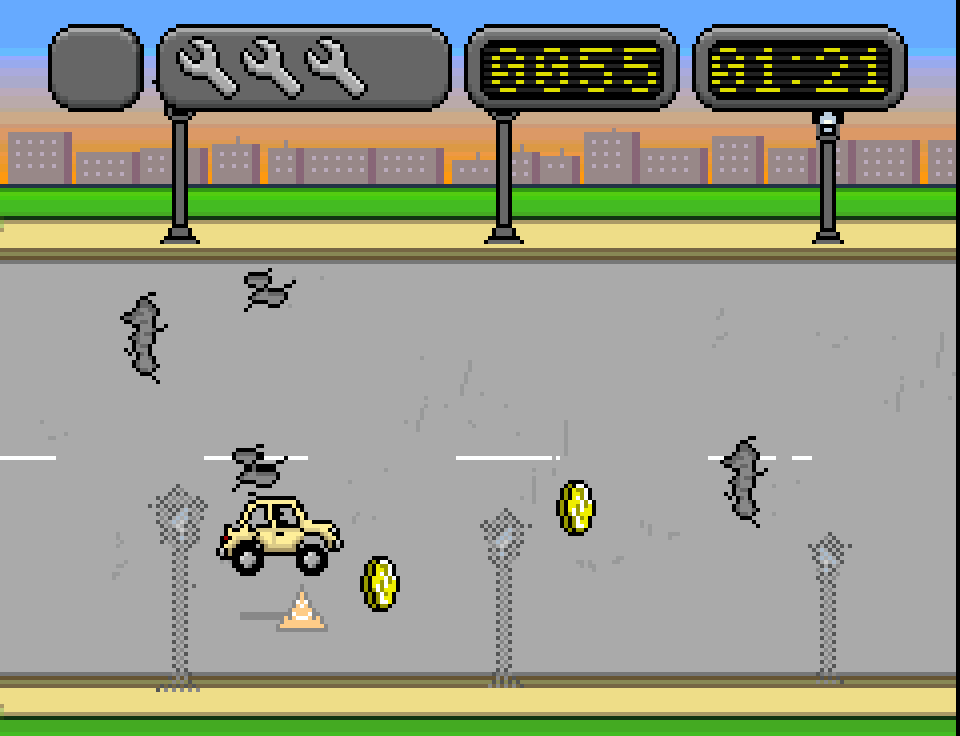
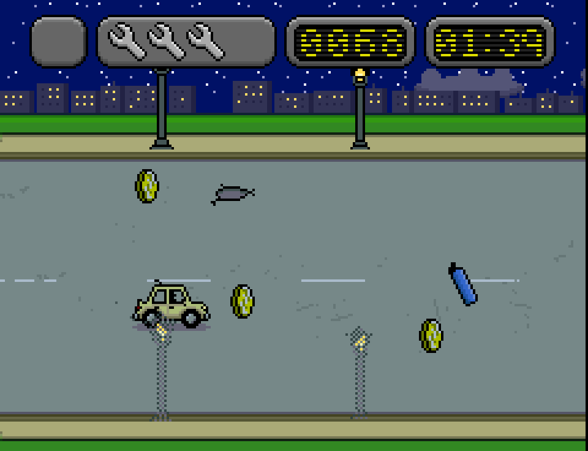
THE CAR RADIOLA RADIO DEL AUTO
Your car has a radio with eleven tracks, made for the game and played in stereo on the MEGA65's four SID chips, with sampled drums: Pothole Boogie, Who Made the Holes, P.H.R., You Shook Me All Road Long, Back on Blacktop, Jump to Thrill, Coins Talk, Dirty Roads Done Pothole Deep, Highway Chug, Going the Last Mile and Gonna Jump Now.
Tu auto tiene una radio con once temas, hechos para el juego y tocados en estéreo con los cuatro chips SID de la MEGA65, con batería de muestras: Pothole Boogie, Who Made the Holes, P.H.R., You Shook Me All Road Long, Back on Blacktop, Jump to Thrill, Coins Talk, Dirty Roads Done Pothole Deep, Highway Chug, Going the Last Mile y Gonna Jump Now.
T tunes in the next track and M turns the radio off and on. Every run starts with the last track you picked.
T sintoniza el tema siguiente y M apaga y prende la radio. Cada partida empieza con el último tema que elegiste.
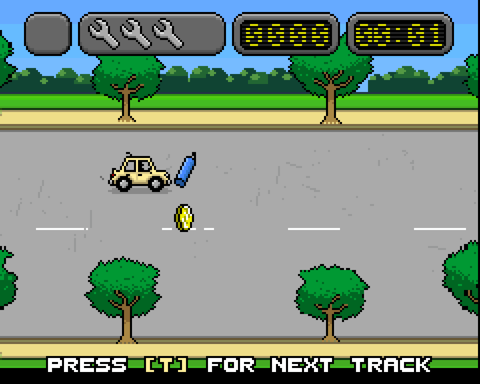
THE GARAGEEL GARAJE
| Car | Auto | Strength | Fortaleza | Speed | Velocidad | Price | Precio | |
|---|---|---|---|---|---|---|---|---|
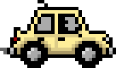 | Stock | 3 | NormalNormal | FreeGratis | ||||
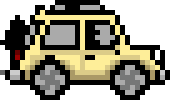 | Truck | 4 | NormalNormal | 200 | ||||
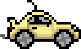 | Sport | 3 | FastRápida | 500 | ||||
| ??? | 4 | FastRápida | 700 |
Plus nine trails to buy, from plain colors to the Rainbow, and seven body colors to choose from, free. Each car keeps its own color and its own trail. Everything you buy, your medals, your record and the Hall of Fame are saved on the disk.
Y nueve estelas para comprar, desde colores lisos hasta la Rainbow, y siete colores de carrocería para elegir, gratis. Cada auto guarda su color y su estela. Todo lo que compras, tus medallas, tu récord y el salón de la fama se guardan en el disco.
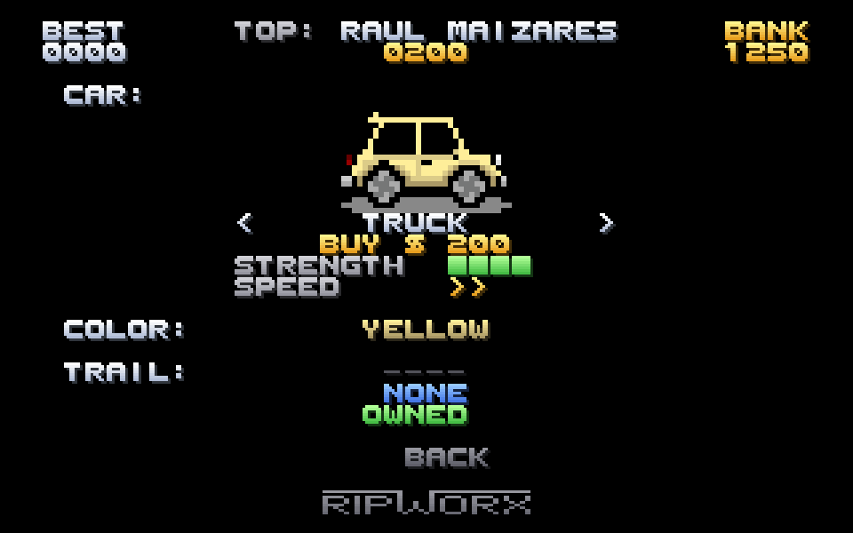
SCREENSPANTALLAS
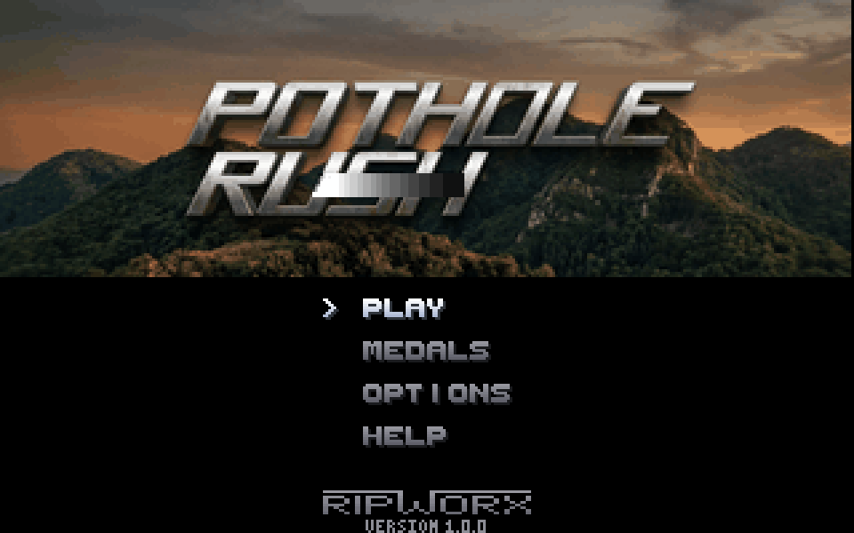
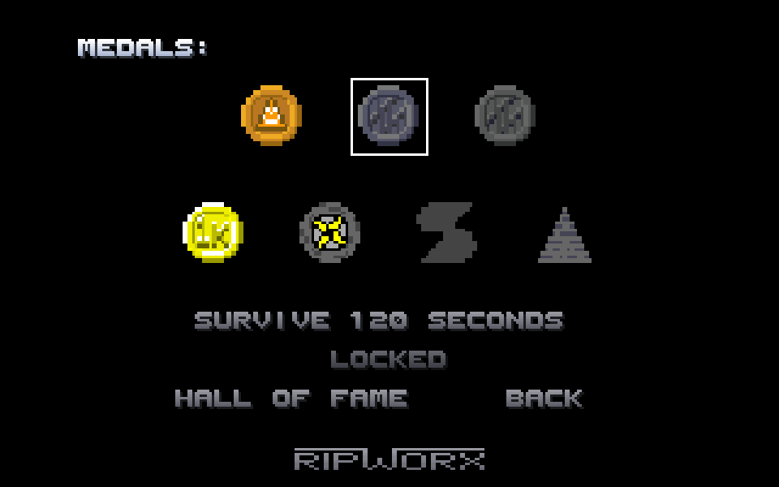
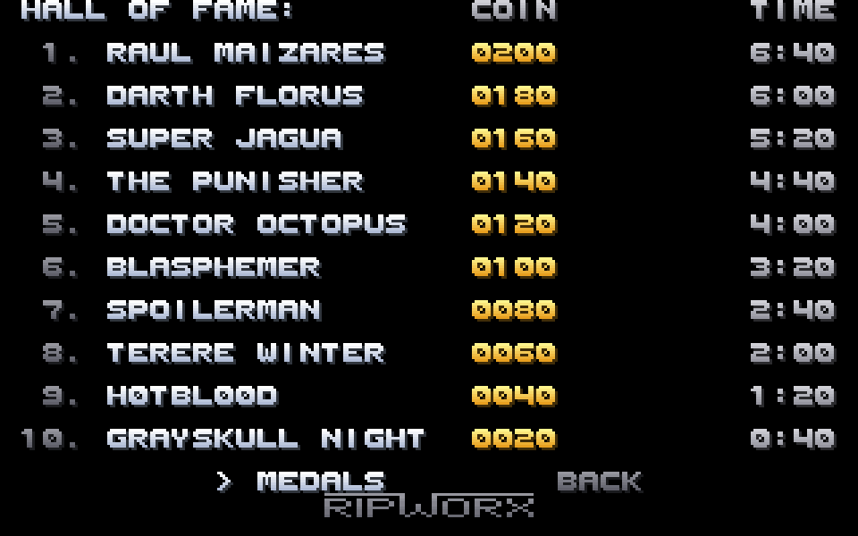
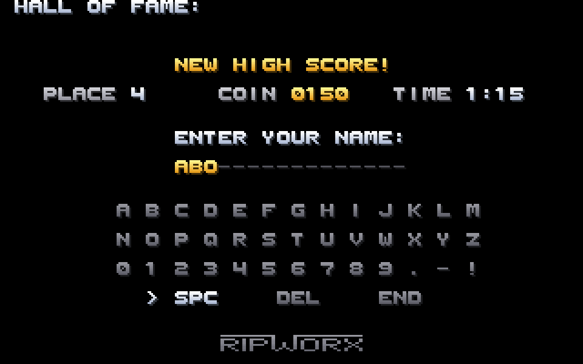
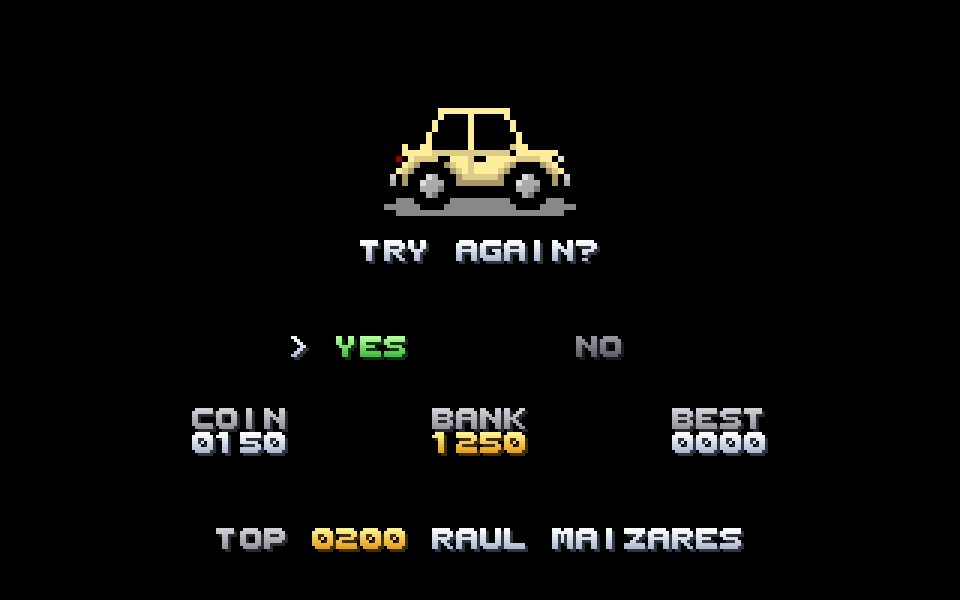
DOWNLOADDESCARGA
Windows
Version 1.0.0 for Windows 10 and 11 (64-bit) · 1.5 MBVersión 1.0.0 para Windows 10 y 11 (64 bits) · 1,5 MB
Also: portable, a single file (.exe, 1.5 MB) · without installing (.zip, 2.0 MB) · for managed installs (.msi, 2.2 MB)
También: portátil, un solo archivo (.exe, 1,5 MB) · sin instalar (.zip, 2,0 MB) · para instalaciones administradas (.msi, 2,2 MB)
What's inside
Qué trae
- The game with a MEGA65 emulator (Xemu) all set up: it starts by itself, in a window
- F11 for full screen and back
- W A S D or the arrow keys, or a USB gamepad
- El juego con un emulador de MEGA65 (Xemu) ya preparado: arranca solo, en una ventana
- F11 para pantalla completa y volver
- W A S D o las flechas del teclado, o un gamepad USB
Instruction manual (PDF, 0.8 MB)
Manual de instrucciones (PDF, 0,8 MB)
Before you start
Antes de empezar
Windows may say the program comes from an "unknown publisher". Click More info and then Run anyway.
Windows puede avisar que el programa es de un "editor desconocido". Haz clic en Más información y después en Ejecutar de todos modos.
Not sure which one to get? See what each package does, where it saves your progress and how to remove it.
¿No sabes cuál bajar? Mira qué hace cada paquete, dónde guarda tu avance y cómo quitarlo.
Linux
Version 1.0.0 for 64-bit Linux (Ubuntu 24.04, Fedora 39, Debian 13 or newer) · 3.4 MBVersión 1.0.0 para Linux de 64 bits (Ubuntu 24.04, Fedora 39, Debian 13 o más nuevos) · 3,4 MB
What's inside
Qué trae
- The game with a MEGA65 emulator (Xemu) all set up, in a single file
- F11 for full screen and back
- W A S D or the arrow keys, or a USB gamepad
- El juego con un emulador de MEGA65 (Xemu) ya preparado, en un solo archivo
- F11 para pantalla completa y volver
- W A S D o las flechas del teclado, o un gamepad USB
Instruction manual (PDF, 0.8 MB)
Manual de instrucciones (PDF, 0,8 MB)
How to start it
Cómo abrirlo
Make it executable (right click, Properties, Permissions) and open it with a double click. Your progress is saved in your home folder, and it carries over to the next version.
Hazlo ejecutable (botón derecho, Propiedades, Permisos) y ábrelo con doble clic. Tu avance se guarda en tu carpeta personal y pasa solo a la próxima versión.
MEGA65
Version 1.0.0 for PAL and NTSC · 1.7 MBVersión 1.0.0 para PAL y NTSC · 1,7 MB
What's inside
Qué trae
.d81disk image, where the game also saves your progress- The instruction manual in English and in Spanish (PDF)
- Imagen de disco
.d81, donde el juego también guarda tu avance - El manual de instrucciones en español y en inglés (PDF)
What you need
Qué necesitas
A MEGA65 (PAL or NTSC: the game works on both). A joystick in either port, or just the keyboard. Or the Xemu emulator with the MEGA65 ROM.
Una MEGA65 (PAL o NTSC: el juego anda en las dos). Un joystick en cualquier puerto, o solo el teclado. O el emulador Xemu con la ROM de la MEGA65.
How to load it
Cómo cargarlo
Copy the .d81 to the SD card and mount it as drive 8 (from the Freezer
menu: hold RESTORE for a moment). Then type RUN "POTHOLE". It takes a couple of
seconds to load. The disk must stay in drive 8: that's where your progress goes. It can't save
on a real floppy disk.
Copia el .d81 a la tarjeta SD y móntalo como unidad 8 (desde el menú
del Freezer: mantén apretada RESTORE un momento). Después escribe RUN "POTHOLE".
Tarda un par de segundos en cargar. El disco tiene que quedar en la unidad 8: ahí se guarda tu
avance. En un disquete de verdad no puede guardar.
Share it
Compártelo
You may copy and share the zip and everything in it, free of charge and for non-commercial purposes, as is and crediting its authors: CC BY-NC-ND 4.0 license.
Puedes copiar y compartir el zip y todo lo que trae, gratis y sin fines comerciales, tal cual y diciendo quiénes son sus autores: licencia CC BY-NC-ND 4.0.
Pothole Rush is free, and it's also on itch.io, where you can pay what you want. Any contribution helps us keep improving it and make new games.
Pothole Rush es gratis, y también está en itch.io, donde puedes pagar lo que quieras. Cualquier aporte nos ayuda a seguir mejorándolo y a hacer juegos nuevos.
Checksums: SHA256SUMS · The Windows and Linux packages include the Xemu emulator (GPL 2.0), with files of the MEGA65 project (GPL) and its Open ROMs (LGPL 3.0): licenses and source codeSumas de verificación: SHA256SUMS · Los paquetes de Windows y Linux traen el emulador Xemu (GPL 2.0), con archivos del proyecto MEGA65 (GPL) y sus Open ROMs (LGPL 3.0): licencias y código fuente
WHICH ONE DO I CHOOSE?¿QUÉ PAQUETE ELIJO?
They all have the same game. What changes is how it gets onto your computer, where it keeps your progress (money, purchases, medals, Hall of Fame, options and radio track) and what you delete to leave no trace. On Windows, if in doubt, get the installer.
Todos traen el mismo juego. Lo que cambia es cómo llega a tu equipo, dónde guarda tu avance (dinero, compras, medallas, salón de la fama, opciones y tema de la radio) y qué borrar para no dejar rastros. En Windows, si dudas, baja el instalador.
| PackagePaquete | What it doesQué hace | Your progressTu avance | To remove every tracePara no dejar rastros |
|---|---|---|---|
InstallerInstalador Windows · -setup.exe |
What it does:Qué hace:Unpacks the game into a folder you choose (Documents\Pothole Rush MEGA65, unless you pick another) and puts a shortcut on the desktop. Descomprime el juego en la carpeta que elijas (Documentos\Pothole Rush MEGA65, si no eliges otra) y pone un acceso directo en el escritorio. | Your progress:Tu avance:In that folder. For a new version, choose the same folder: your progress stays. En esa carpeta. Para una versión nueva, elige la misma carpeta: tu avance se queda. | To remove every trace:Para no dejar rastros:Delete the folder and the shortcut. Borra la carpeta y el acceso directo. |
PortablePortátil Windows · -portable.exe |
What it does:Qué hace:A single file you can keep anywhere, even on a USB stick. While you play, it unpacks the game into a temporary Windows folder, and deletes it when you close the game. Un solo archivo que puedes guardar donde quieras, también en un pendrive. Mientras juegas, descomprime el juego en una carpeta temporal de Windows y la borra al cerrar el juego. | Your progress:Tu avance:In %APPDATA%\RIPworx\Pothole Rush MEGA65, the same as the .msi: play with either one and your progress is the same (don't open both at once). It stays with new versions.
En %APPDATA%\RIPworx\Pothole Rush MEGA65, la misma que el .msi: juegues con uno o con el otro, el avance es el mismo (no abras los dos a la vez). Se conserva con las versiones nuevas. |
To remove every trace:Para no dejar rastros:Delete the .exe and the %APPDATA%\RIPworx\Pothole Rush MEGA65 folder.
Borra el .exe y la carpeta %APPDATA%\RIPworx\Pothole Rush MEGA65. |
For managed installsPara instalaciones administradas Windows · .msi |
What it does:Qué hace:Installs for your user only, without asking for administrator rights, with the game in the Start menu and on the desktop. Instala solo para tu usuario, sin pedir permisos de administrador, con el juego en el menú Inicio y en el escritorio. | Your progress:Tu avance:In %APPDATA%\RIPworx\Pothole Rush MEGA65, the same as the portable one. It stays with new versions. En %APPDATA%\RIPworx\Pothole Rush MEGA65, la misma que el portátil. Se conserva con las versiones nuevas. | To remove every trace:Para no dejar rastros:Uninstall it from Settings > Apps (your progress isn't deleted), then delete the %APPDATA%\RIPworx\Pothole Rush MEGA65 folder. Desinstálalo desde Configuración > Aplicaciones (tu avance no se borra) y después borra la carpeta %APPDATA%\RIPworx\Pothole Rush MEGA65. |
Without installingSin instalar Windows · .zip |
What it does:Qué hace:Extract the whole zip into a folder and open Pothole Rush.exe. Nothing to install. Descomprime todo el zip en una carpeta y abre Pothole Rush.exe. No se instala nada. | Your progress:Tu avance:Inside that folder (emulador\potholerush.d81). For a new version, copy that file into the new folder. Dentro de esa carpeta (emulador\potholerush.d81). Para una versión nueva, copia ese archivo a la carpeta nueva. | To remove every trace:Para no dejar rastros:Delete the folder.Borra la carpeta. |
AppImage Linux · .AppImage |
What it does:Qué hace:A single file: make it executable and open it. Nothing to install. Un solo archivo: hazlo ejecutable y ábrelo. No se instala nada. | Your progress:Tu avance:In ~/.local/share/RIPworx/Pothole Rush MEGA65. It stays with new versions. En ~/.local/share/RIPworx/Pothole Rush MEGA65. Se conserva con las versiones nuevas. | To remove every trace:Para no dejar rastros:Delete the AppImage and that folder.Borra el AppImage y esa carpeta. |
MEGA65 .zip |
What it does:Qué hace:The .d81 disk image, for a real MEGA65 or for Xemu with the MEGA65 ROM.
La imagen de disco .d81, para una MEGA65 de verdad o para Xemu con la ROM de la MEGA65. |
Your progress:Tu avance:On the .d81 itself, in the POTHOLE.SAV file. Keep your copy of the disk to keep your progress.
En el mismo .d81, en el archivo POTHOLE.SAV. Guarda tu copia del disco para conservar tu avance. |
To remove every trace:Para no dejar rastros:Delete the .d81.Borra el .d81. |
To start over without removing the game, delete only the place where your progress is kept.
Para empezar de cero sin quitar el juego, borra solo el lugar donde se guarda tu avance.
THE STORYLA HISTORIA
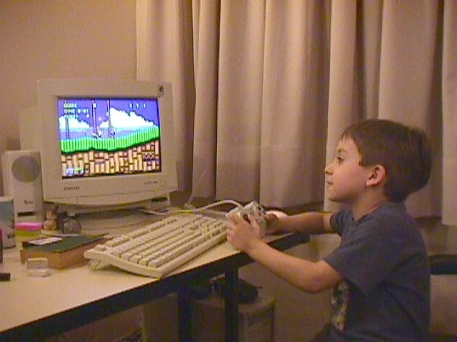
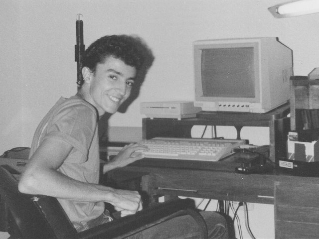
Sebas Zayas created Pothole Rush in 2014 on MIT's Scratch website. You can still play the original at scratch.mit.edu.
Sebas Zayas creó Pothole Rush en 2014 en el sitio de Scratch del MIT. El original todavía se puede jugar en scratch.mit.edu.
Twelve years later, his father Carlos Zayas brought it to the Commodore 64, his favorite retro computer, and then to the MEGA65, the new 8-bit computer that carries on the Commodore 65, with the help of Claude, by Anthropic. The rules, the spirit and the drawings are Sebas's, now in full color; the music, the radio and much of the scenery were made anew for the MEGA65.
Doce años después, su padre, Carlos Zayas, lo llevó a la Commodore 64, su computadora retro favorita, y después a la MEGA65, la nueva computadora de 8 bits heredera de la Commodore 65, con la ayuda de Claude, de Anthropic. Las reglas, el espíritu y los dibujos son de Sebas, ahora a todo color; la música, la radio y buena parte del paisaje se hicieron de nuevo para la MEGA65.
What's different from the original
Qué cambia respecto del original
- Joystick or keyboard instead of the mouse.
- The whole road, edge to edge, without the original's black frame.
- Five landscapes in random order, each with its own obstacle, an icy road in the snow, and streetlights and headlights at night.
- New stereo music for the MEGA65's four SID chips, with sampled drums, and a car radio with eleven tracks.
- Everything is saved on the disk: money, purchases, medals, options, the radio track and the Hall of Fame, which is new.
- A new medal for surviving a whole hour, and one more bar of strength for every car.
- Joystick o teclado en lugar del mouse.
- La ruta entera, de punta a punta, sin el marco negro del original.
- Cinco paisajes en orden al azar, cada uno con su obstáculo, la ruta helada en la nieve, y faroles y faros de noche.
- Música nueva en estéreo para los cuatro chips SID de la MEGA65, con batería de muestras, y una radio en el auto con once temas.
- Todo se guarda en el disco: el dinero, las compras, las medallas, las opciones, el tema de la radio y el salón de la fama, que es nuevo.
- Una medalla nueva por aguantar una hora entera, y una barra más de fortaleza en cada auto.